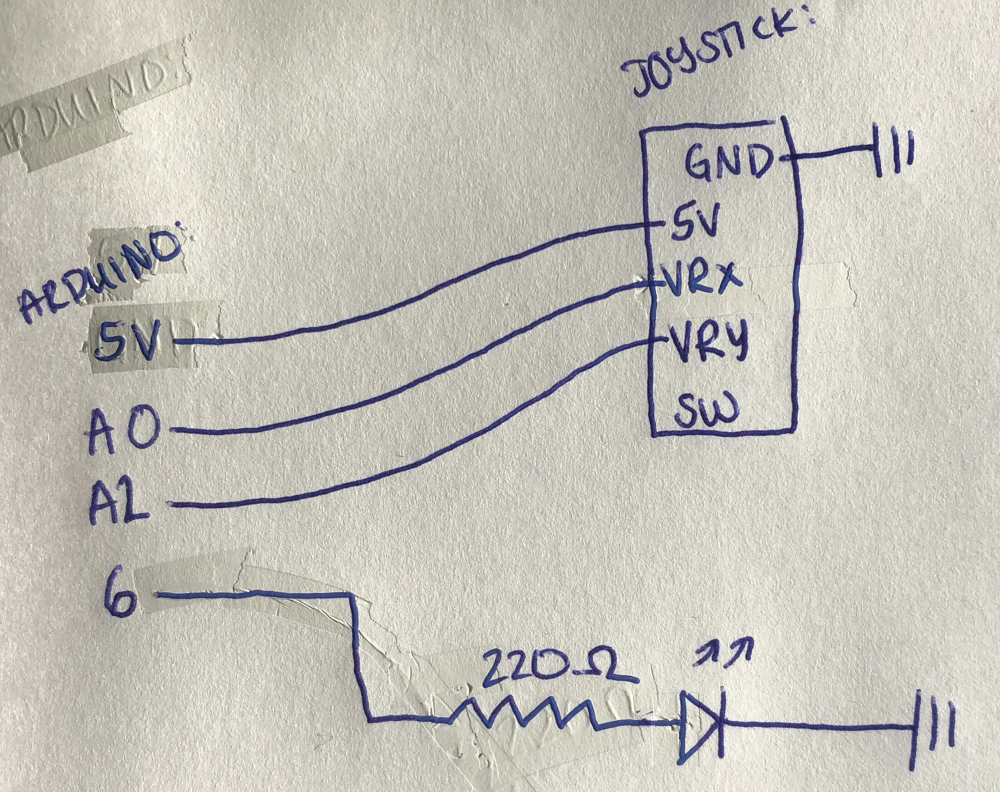
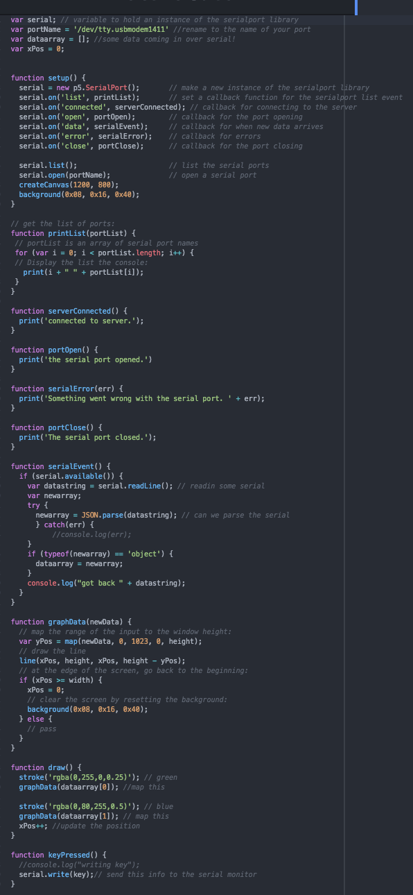
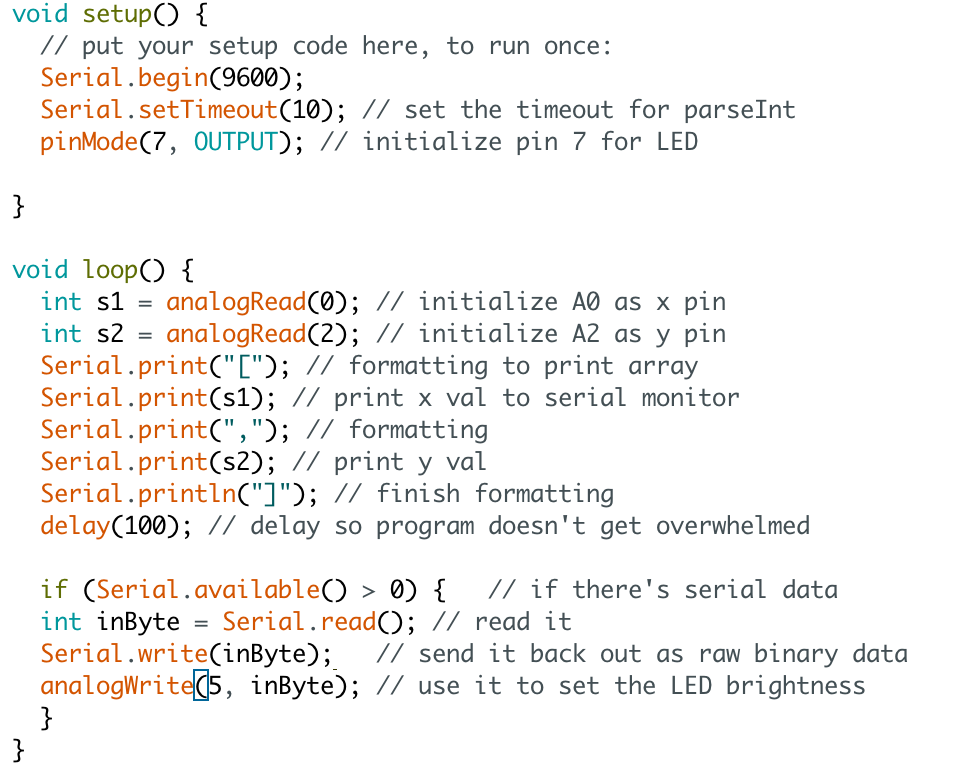
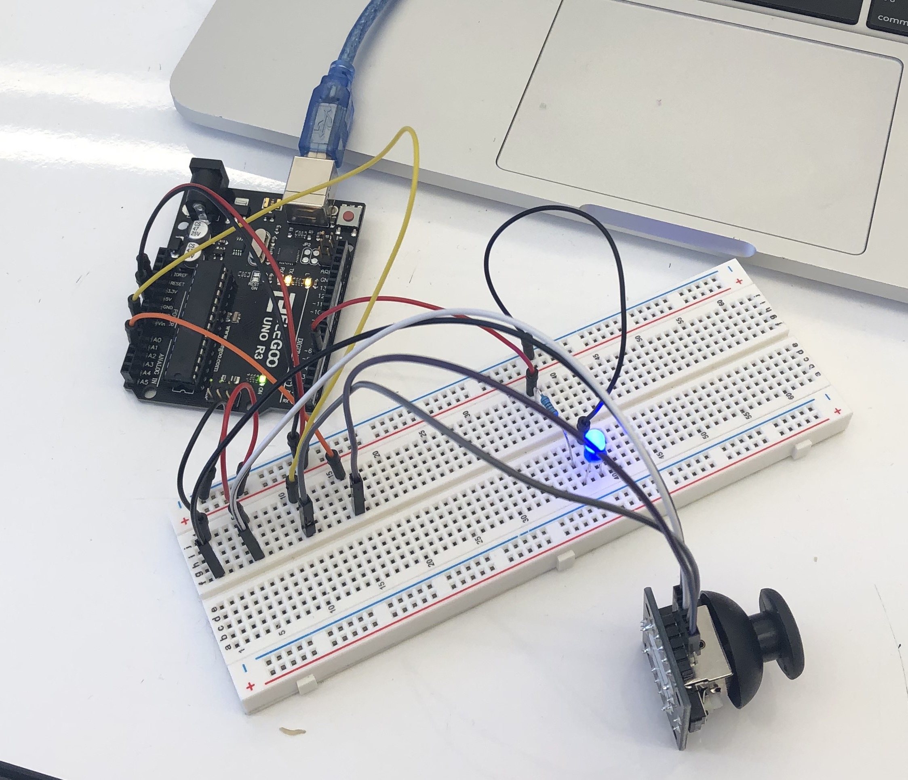

Alison's Assignment 6: The Web Talks Back!
Here is all the documentation for assignment 6!
Schematic

This is my schematic! I don't need any resistor for the joystick because it has one built in, and I chose to use a 220 ohm resistor for the blue LED, despite technically being able to use a 100 ohm one, because it is too bright and messes with my phone camera. Calculation: (5-3.3 = 20(10^-3)*R, R=85)
Code

This is my sketch.js code for the circuit. It is an amalgamation of example 2 from p5 examples and addons, and also example code from the slides for lecture 10. It works by mapping the joystick xy values from the serial monitor to a line on the screen, and it does this repeatedly to make a chart. It then also is looking for any input from the keyboard, and if there is, it writes it to the serial monitor so it can be read by the arduino.
This is my arduino code, which is an amalgamation of example codes from the lecture 10 slides. It works by writing the joystick's x and y values to the serial monitor so that it can be send to the sketch.js, while also simultaneously checking if anything has been written to the serial monitor, and if so, adjusts the LED's brightness accordingly.
Circuit

This is a picture of my circuit!

And finally, here's a gif of my circuit's operation. I couldn't have done this assignment without the help of TJ, Jasper, and prof Nadya in class! My p5 code is an edited amalgamation of p5 example code and lecture 10 example code.